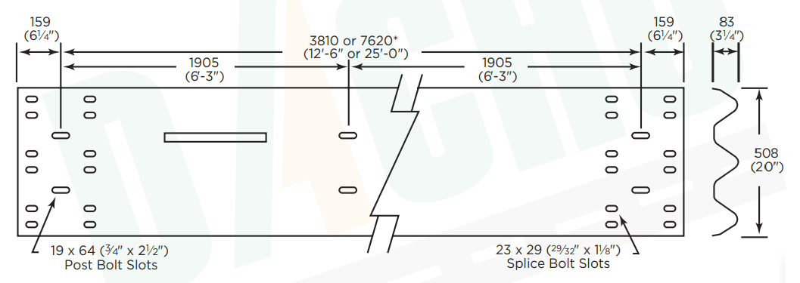

DACHU guardrail is manufactured to AASHTO specifications in M180 Class A or B, and finish types 1, 2, 3, or Every piece of DACHU Thrie-Beam guardrail is stamped with a brand registration that is repeated throughout the entire length of the rail. We have standard highway guarding products and can also provide custom fabrications on a make-to-order basis, with or without galvanized coating.
W-beam guardrails often do not require maintenance after minor impacts. They deflect less than cable barriers, so they can be located closer to objects where space is limited.
We stock curved guardrail from 5' to 60' radii, a wide variety of terminal end conditions including fishtail, and a wide variety of steel posts for state and non-state use.
Parameters
| Guardrail Standard | AASHTO M180 |
| Totally Length | 13'½" |
| Effective Length | 12'6" |
| Base Steel thickness | Class A = 12 gauge Class B = 10 gauge |
| Material | S355JR Steel |
| Yield Point | Minimum 345Mpa (50000psi); |
| Tensile Strength | Minimum 483Mpa (70000psi); |
| Surface Treatment | Hot Dip Galvanized |
| Zinc Coating |
Type 1 = Zinc coated 1.8 oz/sq. ft. (550 g/sq. m.) minimum single spot Type 2 = Zinc coated 3.6 oz/sq. ft. (550 g/sq. m.) minimum single spot Type 3 = Uncoated Steel Type 4 = Weathering Steel Can be customized |
| >Coat Standard | ASTM A123 |
| Free Sample | Available |
| Curved W Beam | Can be customized |
| Special lengths available upon request. | |
Advantages of W Beam
W Beam Crash Barrier Specification Drawing

W Beam with Offset Block on Steel Post